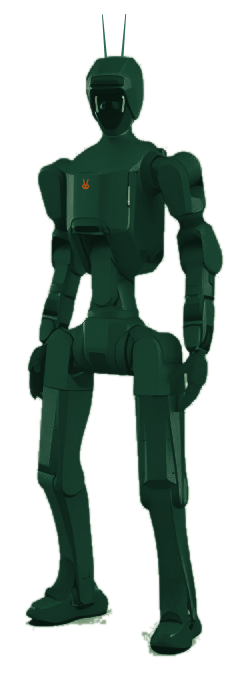
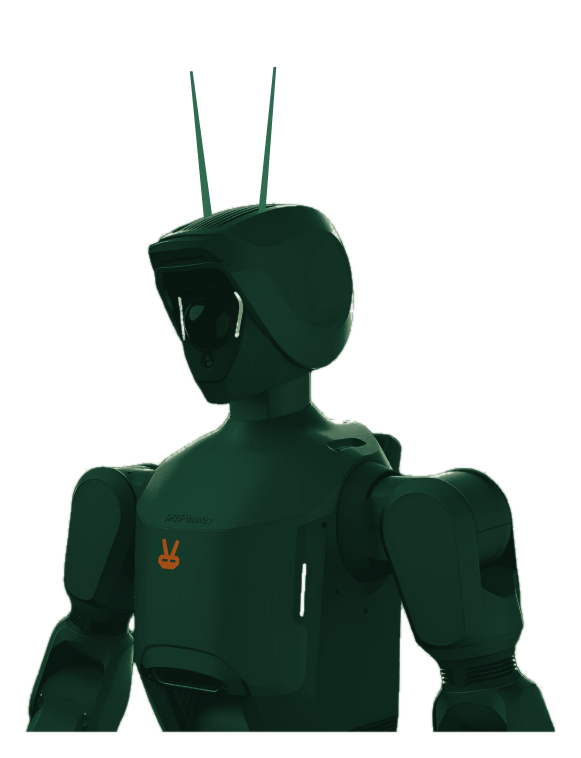

Oryx trains humanoids to run the inspection rounds people shouldn't — finding faults before they become failures across the plants, pipelines and substations of Saudi Arabia and the Gulf.

ORYX-01 · concept liveryEvery refinery, plant, substation and pipeline station runs operator rounds — fixed walking routes, two to four times a shift, by two-person buddy crews in 50 °C heat. Roughly 95% of them find nothing. Yet they're HSE-mandated and can't be skipped. High-frequency, fixed-route, mostly-nothing, can't-skip, dangerous, expensive.
Oryx automates the operator round. The robot does the watching portion of that work — it never gets heatstroke, it works the 2 a.m. round, and it produces a photographic audit trail no human round has ever produced. The robot is the employee. The software is the company.
Autonomous inspection rounds. Read gauges, scan for leaks, heat, corrosion and cracks — and log every anomaly with location, class, severity, confidence and imagery.
Manipulation arrives — operate valves, clear simple obstructions, take samples. The round stops being only observation.
On certified, all-weather platforms, the fleet takes on the heavier hazardous work — on the path to certified-zone operations.
Oryx is the autonomy layer — everything between a stock robot and a paid, audited inspection round. Supervised autonomy means a single human supervises an entire fleet from one screen, and signs off on what the robots find.
Each Oryx runs the fixed round on schedule — day shift, night shift, the rounds people skip.
Fine-tuned vision finds cracks, leaks, hotspots and out-of-range gauges, scored by confidence.
Every finding becomes an audit record: location, class, severity, confidence, imagery.
The fleet reports to a single console. People review and act — no one walks the route to find out.
Every Oryx runs Islah AI — a vision-language-action model fine-tuned on Gulf conditions and backed by a classical-vision core. The moat isn't the model weights, which everyone can get; it's the Gulf inspection data the fleet generates, round after round.

The desert-green industrial humanoid. One uniform livery turns any platform into one recognisable workforce — the signature horn-antennas double as the comms array for low-connectivity sites, and the orange mark rides on the chest.
Runs on the affordable, available Unitree G1 platform — for indoor and non-classified areas today.
An IP66 platform rated for dust and −20 to +55 °C takes the round into the desert.
Ex-certified partner platforms open the path to classified-zone operations.
The underlying platform is always disclosed as a component — “ORYX-01, on a Unitree G1 platform,” the way a robotaxi discloses its vehicle. We promise the path, never “humanoids on live rigs today.”
Customers don't want to buy and operate a robot — they want the round done. Oryx delivers inspection turnkey: a finance partner owns the hardware, Oryx operates it, and you pay one annual fee for the outcome.
For non-classified zones — on duty around the clock, at a fraction of a human crew.
Built for the field — works the desert, through the night, and never stops.
We enter through the GO AI Hub corridor — Saudi Arabia's national AI gateway and its state-backed channel into the operators that run the Kingdom. The kind of entry a Zurich or Pittsburgh competitor has to build from zero.
Western inspection robots don't scale to fleets in the Gulf. Oryx prices per robot, per year — turnkey, asset-light, and cash-positive per deal.
A hardware abstraction layer sits between the autonomy stack and any robot. New platform, new adapter — not a rewrite. We run on the best hardware for the zone.
SDAIA-aligned, in-Kingdom data handling — built for how the Gulf expects industrial data to be governed.
We're deploying the first inspection pilots in Saudi Arabia now. Ask for a site visit — a 90-minute, on-site assessment of one of your routes.